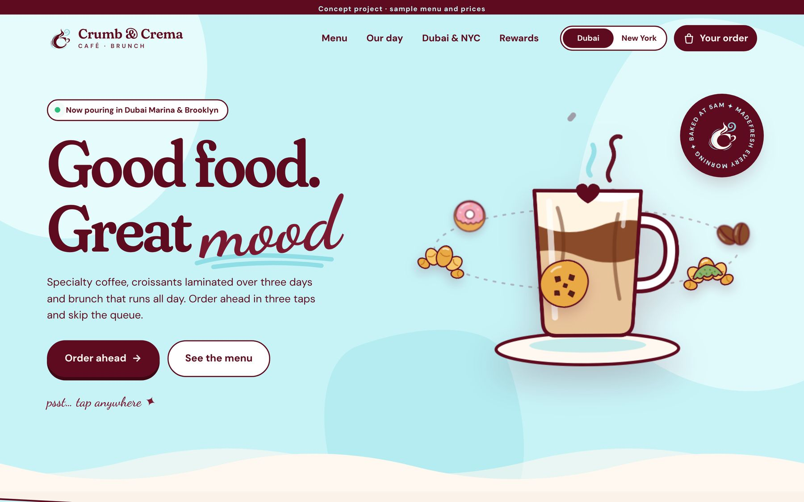

Crumb & CremaCafé · Brunch
Case study · Arooj Fatima
Crumb & CremaCafé · Brunch
Case study · Arooj Fatima
Brand · Ordering website · Café admin
Good food. Great mood.
Crumb & Crema is a concept specialty café with one branch in Dubai Marina and one in Williamsburg, Brooklyn. I shaped its brand, then designed and built a playful ordering website and a custom admin panel that runs both cafés.
- Role
- Brand designer, UI/UX designer and developer
- Scope
- Logo and identity, animated website with order-ahead, café admin panel
- Built with
- React, TypeScript, Next.js structure, Laravel API spec
- Year
- 2026 · self-initiated concept
